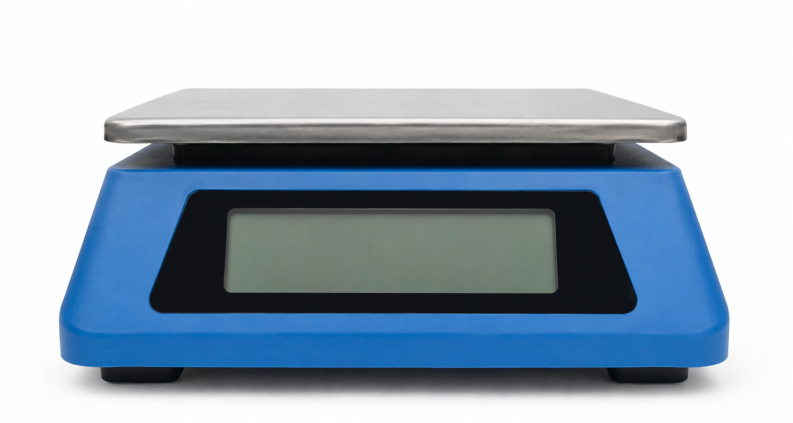
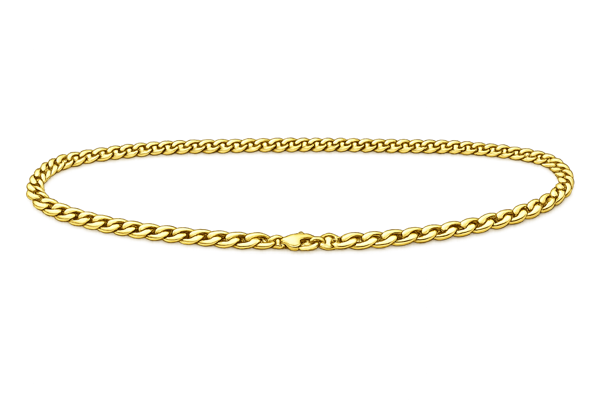

כל הכבוד!
אם לא הצלחת לענות נכון על חלק מהשאלות, חשוב להבין מה עדיין לא ברור ולפנות לצ'אט או למורה להסבר נוסף.
עכשיו מגיעה שאלת השיא
יש בה 3 סעיפים. עליכם להצליח בכולם.


מפעל תכשיטי זהב פיתח מאזניים חדשים לבקרת איכות.
המאזניים מסייעים לעובדות ועובדי המפעל לקבוע את מסת התכשיטים בדיוק גבוה ככל האפשר.
הניחו את השרשרת על המאזניים כדי למדוד את המסה. הסירו אותה והניחו אותה שוב לפי הצורך.
לאחר כל מדידת מסה היישומון:
- מציג את תוצאת המדידה החדשה על צג המאזניים
- מוסיף שורה חדשה לטבלה בה יש לתעד את המדידה.
- מחשב ומציג את הממוצע החדש של כל המדידות שבוצעו עד כה.
עליכם להחליט מתי נאספו מספיק נתונים כדי לסמוך על התוצאה.
שקלו כעת.
שקלו כעת ותעדו כל מדידה בעמודת 'מסה'.
החליטו מתי נאספו מספיק נתונים כדי לסמוך על התוצאה.
בשלב זה, הפסיקו לשקול והמשיכו לשאלות.
| הממוצע עד כה | מסה (גרם) | מספר מדידה |
|---|---|---|
| 1 |

| הממוצע עד כה | מסה (גרם) | מס' מדידה |
|---|---|---|
| 50.8 | 50.8 | 1 |
| 50.0 | 49.2 | 2 |
| 50.1 | 50.4 | 3 |
| 50.1 | 49.8 | 4 |
| 50.1 | 50.1 | 5 |
| 50.1 | 50.0 | 6 |
| 50.0 | 49.9 | 7 |
סעיף א
לאחר כמה מדידות בערך נראה שהממוצע מתחיל להתייצב?
המדידה השביעית היא 49.9 גרם, ולכן זו המסה המדויקת ביותר של התליון.
סעיף ב
קראו את הטענה של אחד העובדים במפעל.
האם הוא צודק?
תוכלו בבקשה להמליץ לי כמה מדידות לבצע לכל תליון כדי להשיג איזון בין דיוק מדעי והשקעת זמן במדידות?
סעיף ג
מוריה, מנהלת המפעל מבקשת את המלצתכם:
השלימו את ההמלצה למוריה בעזרת המילים המתאימות:
לאחר שבחנו את תוצאות המדידות, אנו ממליצים לבצע
מדידות לכל תליון.
במדע אין "מספר קסם" קבוע של חזרות, אלא בחירה לבצע את מספר המדידות הדרוש עד שה-
כבר
.
בנתונים שראינו, ביצוע
מדידות בלבד עדיין לא הראה יציבות מספקת, ולכן נדרשה מדידה נוספת כדי להפחית את ה-
ולקבל תוצאה
.
כל הכבוד!
השלמת את היחידה בהצלחה!
רמז
שימו לב מתי הממוצע מתחיל להתייצב במדידות שביצעתם.
רמז
חשבו מה נותן ביטחון גדול יותר במדידה: תוצאה אחת בלבד, או כמה תוצאות שחוזרות על עצמן ומאפשרות לחשב ממוצע?
רמז
חפשו בטבלה מתי הממוצע מפסיק להשתנות בצורה משמעותית. חשבו גם מה מוסיפה מדידה נוספת כאשר שלוש המדידות הראשונות עדיין לא נותנות תוצאה יציבה מספיק.